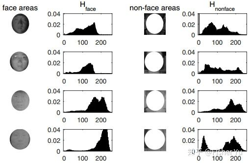

<!DOCTYPE html>
<html lang="en">

<head>
  <meta charset="utf-8" />
    
  <meta name="viewport" content="width=device-width, initial-scale=1, maximum-scale=1" />
  <title>
    活体检测概述 |  For The Dream
  </title>
  <meta name="generator" content="hexo-theme-yilia-plus">
  
  <link rel="shortcut icon" href="/favicon.ico" />
  
  
<link rel="stylesheet" href="/css/style.css">

  
<script src="/js/pace.min.js"></script>


  

  

</head>

</html>

<body>
  <div id="app">
    <main class="content">
      <section class="outer">
  <article id="post-活体检测概述" class="article article-type-post" itemscope
  itemprop="blogPost" data-scroll-reveal>

  <div class="article-inner">
    
    <header class="article-header">
       
<h1 class="article-title sea-center" style="border-left:0" itemprop="name">
  活体检测概述
</h1>
  

    </header>
    

    
    <div class="article-meta">
      <a href="/2020/02/12/%E6%B4%BB%E4%BD%93%E6%A3%80%E6%B5%8B%E6%A6%82%E8%BF%B0/" class="article-date">
  <time datetime="2020-02-12T07:31:13.000Z" itemprop="datePublished">2020-02-12</time>
</a>
      
  <div class="article-category">
    <a class="article-category-link" href="/categories/%E6%8A%80%E6%9C%AF/">技术</a>
  </div>

      
      
<div class="word_count">
    <span class="post-time">
        <span class="post-meta-item-icon">
            <i class="ri-quill-pen-line"></i>
            <span class="post-meta-item-text"> 字数统计:</span>
            <span class="post-count">1.1k字</span>
        </span>
    </span>

    <span class="post-time">
        &nbsp; | &nbsp;
        <span class="post-meta-item-icon">
            <i class="ri-book-open-line"></i>
            <span class="post-meta-item-text"> 阅读时长≈</span>
            <span class="post-count">3分钟</span>
        </span>
    </span>
</div>

      
    </div>
    

    
    
    <div class="tocbot"></div>


    

    <div class="article-entry" itemprop="articleBody">
      


      

      
      <h1 id="一、-活体检测简介"><a href="#一、-活体检测简介" class="headerlink" title="一、 活体检测简介"></a>一、 活体检测简介</h1><h3 id="1-什么是活体检测？"><a href="#1-什么是活体检测？" class="headerlink" title="1.什么是活体检测？"></a>1.什么是活体检测？</h3><p>判断捕捉到的人脸是真实人脸，还是伪造的人脸攻击（如：彩色纸张打印人脸图，电子设备屏幕中的人脸数字图像以及面具等）。</p>
<h3 id="2-为什么需要活体检测？"><a href="#2-为什么需要活体检测？" class="headerlink" title="2.为什么需要活体检测？"></a>2.为什么需要活体检测？</h3><p>在金融支付，门禁等应用场景，活体检测一般是嵌套在人脸检测与人脸识别or验证中的模块，用来验证是否用户真实本人。</p>
<h3 id="3-活体检测对应的计算机视觉问题"><a href="#3-活体检测对应的计算机视觉问题" class="headerlink" title="3.活体检测对应的计算机视觉问题"></a>3.活体检测对应的计算机视觉问题</h3><p>就是分类问题，可看成二分类（真 or 假）；也可看成多分类（真人，纸张攻击，屏幕攻击，面具攻击）。</p>
<h3 id="4-活体与非活体有什么区别？"><a href="#4-活体与非活体有什么区别？" class="headerlink" title="4.活体与非活体有什么区别？"></a>4.活体与非活体有什么区别？</h3><ul>
<li><p>颜色纹理</p>
</li>
<li><p>非刚性运动变形</p>
</li>
<li><p>材料 （皮肤，纸质，镜面）</p>
</li>
<li><p>图像or视频质量</p>
<a id="more"></a>

</li>
</ul>
<h1 id="二、活体检测的不同输入形式"><a href="#二、活体检测的不同输入形式" class="headerlink" title="二、活体检测的不同输入形式"></a>二、活体检测的不同输入形式</h1><h2 id="（一）近红外NIR"><a href="#（一）近红外NIR" class="headerlink" title="（一）近红外NIR"></a>（一）近红外NIR</h2><p>由于NIR的光谱波段与可见光VIS不同，故真实人脸及非活体载体对于近红外波段的吸收和反射强度也不同，即也可通过近红外相机出来的图像来活体检测。从出来的图像来说，近红外图像对屏幕攻击的区分度较大，对高清彩色纸张打印的区分度较小。</p>
<p>从特征工程角度来说，方法无非也是提取NIR图中的光照纹理特征或者 远程人脸心率特征 来进行。下图可见，上面两行是真实人脸图中人脸区域与背景区域的直方图分布，明显与下面两行的非活体图的分布不一致；而通过与文章[5]中一样的rPPG提取方法，在文章中说明其在NIR图像中出来的特征更加鲁棒。</p>
<p></p>
<h2 id="（二）结构光-ToF"><a href="#（二）结构光-ToF" class="headerlink" title="（二）结构光/ToF"></a>（二）结构光/ToF</h2><p>由于结构光及ToF能在近距离里相对准确地进行3D人脸重构，即可得到人脸及背景的点云图及深度图，可作为精准活体检测（而不像单目RGB或双目RGB中仍需估计深度）。不过就是成本较高，看具体应用场景决定。</p>
<p></p>
<p>很多朋友都知道，今年各个手机厂家的旗舰产品基本都搭载了3D结构光的技术，3D结构光可以说是当下最配称之为黑科技的技术之一了，但是大家都以为3D结构光只用作于人脸识别，其实并不是！</p>
<p>通俗来讲，3D结构光是从摄像头弹出数百万条投射光线到识别物体上，形成三维立体图像，能够更精确的识别物体，用深度一些的话来解释就是：根据投射的潜望结构光线扫描采集物体信息，通过”点”对”面”的特殊算法构成三维图像进行对比与识别。</p>
<p></p>
<p>3D结构光的用途不仅在于面部识别，还可以用于美颜自拍(有针对性的美颜，分析脸部结构进行计算，并非糊成一片的”美白、大眼、瘦脸”)、AR购物(只需要扫描脸部即可实现自动换衣、选衣)、3D打印(由手机进行扫描，再传输到3D打印机上)以及很可爱的萌拍等多项技术；</p>
<h2 id="（三）光场-Light-field"><a href="#（三）光场-Light-field" class="headerlink" title="（三）光场 Light field"></a>（三）光场 Light field</h2><p>光场相机具有光学显微镜头阵列，且由于光场能描述空间中任意一点向任意方向的光线强度，出来的raw光场照片及不同重聚焦的照片，都能用于活体检测：</p>
<h3 id="1-raw光场照片及对应的子孔径照片"><a href="#1-raw光场照片及对应的子孔径照片" class="headerlink" title="1. raw光场照片及对应的子孔径照片"></a>1. raw光场照片及对应的子孔径照片</h3><p>如下图所示，对于真实人脸的脸颊边缘的微镜图像，其像素应该是带边缘梯度分布；而对应纸张打印或屏幕攻击，其边缘像素是随机均匀分布：</p>
<p></p>
<h3 id="2-使用一次拍照的重聚焦图像"><a href="#2-使用一次拍照的重聚焦图像" class="headerlink" title="2. 使用一次拍照的重聚焦图像"></a>2. 使用一次拍照的重聚焦图像</h3><p>原理是可以从两张重聚焦图像的差异中，估计出深度信息；从特征提取来说，真实人脸与非活体人脸的3D人脸模型不同，可提取差异图像中的 亮度分布特征+聚焦区域锐利程度特征+频谱直方图特征。</p>

      
      <!-- reward -->
      
      <div id="reward-btn">
        打赏
      </div>
      
    </div>
      <!-- copyright -->
      
        <div class="declare">
          <ul class="post-copyright">
            <li>
              <i class="ri-copyright-line"></i>
              <strong>版权声明： </strong s>
              本博客所有文章除特别声明外，均采用 <a href="https://www.apache.org/licenses/LICENSE-2.0.html" rel="external nofollow"
                target="_blank">Apache License 2.0</a> 许可协议。转载请注明出处！
            </li>
          </ul>
        </div>
        
    <footer class="article-footer">
      
          
<div class="share-btn">
      <span class="share-sns share-outer">
        <i class="ri-share-forward-line"></i>
        分享
      </span>
      <div class="share-wrap">
        <i class="arrow"></i>
        <div class="share-icons">
          
          <a class="weibo share-sns" href="javascript:;" data-type="weibo">
            <i class="ri-weibo-fill"></i>
          </a>
          <a class="weixin share-sns wxFab" href="javascript:;" data-type="weixin">
            <i class="ri-wechat-fill"></i>
          </a>
          <a class="qq share-sns" href="javascript:;" data-type="qq">
            <i class="ri-qq-fill"></i>
          </a>
          <a class="douban share-sns" href="javascript:;" data-type="douban">
            <i class="ri-douban-line"></i>
          </a>
          <!-- <a class="qzone share-sns" href="javascript:;" data-type="qzone">
            <i class="icon icon-qzone"></i>
          </a> -->
          
          <a class="facebook share-sns" href="javascript:;" data-type="facebook">
            <i class="ri-facebook-circle-fill"></i>
          </a>
          <a class="twitter share-sns" href="javascript:;" data-type="twitter">
            <i class="ri-twitter-fill"></i>
          </a>
          <a class="google share-sns" href="javascript:;" data-type="google">
            <i class="ri-google-fill"></i>
          </a>
        </div>
      </div>
</div>

<div class="wx-share-modal">
    <a class="modal-close" href="javascript:;"><i class="ri-close-circle-line"></i></a>
    <p>扫一扫，分享到微信</p>
    <div class="wx-qrcode">
      
    </div>
</div>

<div id="share-mask"></div>
      
      
  <ul class="article-tag-list" itemprop="keywords"><li class="article-tag-list-item"><a class="article-tag-list-link" href="/tags/%E6%B4%BB%E4%BD%93%E6%A3%80%E6%B5%8B/" rel="tag">活体检测</a></li></ul>


    </footer>

  </div>

  
  
  <nav class="article-nav">
    
    
      <a href="/2020/02/12/Markdown-help/" class="article-nav-link">
        <strong class="article-nav-caption">下一篇</strong>
        <div class="article-nav-title">Markdown help</div>
      </a>
    
  </nav>


  

  
  
<!-- valine评论 -->
<div id="vcomments-box">
    <div id="vcomments">
    </div>
</div>
<script src="//cdn1.lncld.net/static/js/3.0.4/av-min.js"></script>
<script src='https://cdn.jsdelivr.net/npm/valine@1.3.10/dist/Valine.min.js'></script>
<script>
    new Valine({
        el: '#vcomments',
        app_id: '',
        app_key: '',
        path: window.location.pathname,
        notify: 'false',
        verify: 'false',
        avatar: 'mp',
        placeholder: '给我的文章加点评论吧~',
        recordIP: true
    });
    const infoEle = document.querySelector('#vcomments .info');
    if (infoEle && infoEle.childNodes && infoEle.childNodes.length > 0) {
        infoEle.childNodes.forEach(function (item) {
            item.parentNode.removeChild(item);
        });
    }
</script>
<style>
    #vcomments-box {
        padding: 5px 30px;
    }

    @media screen and (max-width: 800px) {
        #vcomments-box {
            padding: 5px 0px;
        }
    }

    #vcomments-box #vcomments {
        background-color: #fff;
    }

    .v .vlist .vcard .vh {
        padding-right: 20px;
    }

    .v .vlist .vcard {
        padding-left: 10px;
    }
</style>

  

  
  
  

</article>
</section>
      <footer class="footer">
  <div class="outer">
    <ul class="list-inline">
      <li>
        &copy;
        2020
        ZouJJ
      </li>
      <li>
        
      </li>
    </ul>
    <ul class="list-inline">
      <li>
        
        
        <span>
  <i>PV:<span id="busuanzi_value_page_pv"></span></i>
  <i>UV:<span id="busuanzi_value_site_uv"></span></i>
</span>
        
      </li>
      <li>
        <!-- cnzz统计 -->
        
      </li>
    </ul>
  </div>
</footer>
    <div class="to_top">
        <div class="totop" id="totop">
  <i class="ri-arrow-up-line"></i>
</div>
      </div>
    </main>
      <aside class="sidebar">
        <button class="navbar-toggle"></button>
<nav class="navbar">
  
  <div class="logo">
    <a href="/"></a>
  </div>
  
  <ul class="nav nav-main">
    
    <li class="nav-item">
      <a class="nav-item-link" href="/">主页</a>
    </li>
    
    <li class="nav-item">
      <a class="nav-item-link" href="/archives">归档</a>
    </li>
    
    <li class="nav-item">
      <a class="nav-item-link" href="/categories">分类</a>
    </li>
    
    <li class="nav-item">
      <a class="nav-item-link" href="/tags">标签</a>
    </li>
    
  </ul>
</nav>
<nav class="navbar navbar-bottom">
  <ul class="nav">
    <li class="nav-item">
      
      <a class="nav-item-link nav-item-search"  title="Search">
        <i class="ri-search-line"></i>
      </a>
      
      
      <a class="nav-item-link" target="_blank" href="/atom.xml" title="RSS Feed">
        <i class="ri-rss-line"></i>
      </a>
      
    </li>
  </ul>
</nav>
<div class="search-form-wrap">
  <div class="local-search local-search-plugin">
  <input type="search" id="local-search-input" class="local-search-input" placeholder="Search...">
  <div id="local-search-result" class="local-search-result"></div>
</div>
</div>
      </aside>
      <div id="mask"></div>

<!-- #reward -->
<div id="reward">
  <span class="close"><i class="ri-close-line"></i></span>
  <p class="reward-p"><i class="ri-cup-line"></i>送我一个皮肤吧~</p>
  <div class="reward-box">
    
    <div class="reward-item">
      
      <span class="reward-type">支付宝</span>
    </div>
    
    
    <div class="reward-item">
      
      <span class="reward-type">微信</span>
    </div>
    
  </div>
</div>
      
<script src="/js/jquery-2.0.3.min.js"></script>


<script src="/js/jquery.justifiedGallery.min.js"></script>


<script src="/js/lazyload.min.js"></script>


<script src="/js/busuanzi-2.3.pure.min.js"></script>


<script src="/js/share.js"></script>


<script>
  try {
    var typed = new Typed("#subtitle", {
    strings: ['让暴风雨来的更猛烈些吧','不经历风雨，怎么见彩虹','Tomorrow is another day'],
    startDelay: 0,
    typeSpeed: 200,
    loop: true,
    backSpeed: 100,
    showCursor: true
    });
  } catch (err) {
  }
  
</script>


<script src="/js/tocbot.min.js"></script>

<script>
  // Tocbot_v4.7.0  http://tscanlin.github.io/tocbot/
  tocbot.init({
    tocSelector: '.tocbot',
    contentSelector: '.article-entry',
    headingSelector: 'h1, h2, h3, h4, h5, h6',
    hasInnerContainers: true,
    scrollSmooth: true,
    scrollContainer:'main',
    positionFixedSelector: '.tocbot',
    positionFixedClass: 'is-position-fixed',
    fixedSidebarOffset: 'auto',
    onClick: (e) => {
      $('.toc-link').removeClass('is-active-link');
      $(`a[href=${e.target.hash}]`).addClass('is-active-link');
      $(e.target.hash).scrollIntoView();
      return false;
    }
  });
</script>


<script>
  var ayerConfig = {
    mathjax: false
  }
</script>


<script src="/js/ayer.js"></script>


<script src="https://cdn.jsdelivr.net/npm/jquery-modal@0.9.2/jquery.modal.min.js"></script>
<link rel="stylesheet" href="https://cdn.jsdelivr.net/npm/jquery-modal@0.9.2/jquery.modal.min.css">


<!-- Root element of PhotoSwipe. Must have class pswp. -->
<div class="pswp" tabindex="-1" role="dialog" aria-hidden="true">

    <!-- Background of PhotoSwipe. 
         It's a separate element as animating opacity is faster than rgba(). -->
    <div class="pswp__bg"></div>

    <!-- Slides wrapper with overflow:hidden. -->
    <div class="pswp__scroll-wrap">

        <!-- Container that holds slides. 
            PhotoSwipe keeps only 3 of them in the DOM to save memory.
            Don't modify these 3 pswp__item elements, data is added later on. -->
        <div class="pswp__container">
            <div class="pswp__item"></div>
            <div class="pswp__item"></div>
            <div class="pswp__item"></div>
        </div>

        <!-- Default (PhotoSwipeUI_Default) interface on top of sliding area. Can be changed. -->
        <div class="pswp__ui pswp__ui--hidden">

            <div class="pswp__top-bar">

                <!--  Controls are self-explanatory. Order can be changed. -->

                <div class="pswp__counter"></div>

                <button class="pswp__button pswp__button--close" title="Close (Esc)"></button>

                <button class="pswp__button pswp__button--share" style="display:none" title="Share"></button>

                <button class="pswp__button pswp__button--fs" title="Toggle fullscreen"></button>

                <button class="pswp__button pswp__button--zoom" title="Zoom in/out"></button>

                <!-- Preloader demo http://codepen.io/dimsemenov/pen/yyBWoR -->
                <!-- element will get class pswp__preloader--active when preloader is running -->
                <div class="pswp__preloader">
                    <div class="pswp__preloader__icn">
                        <div class="pswp__preloader__cut">
                            <div class="pswp__preloader__donut"></div>
                        </div>
                    </div>
                </div>
            </div>

            <div class="pswp__share-modal pswp__share-modal--hidden pswp__single-tap">
                <div class="pswp__share-tooltip"></div>
            </div>

            <button class="pswp__button pswp__button--arrow--left" title="Previous (arrow left)">
            </button>

            <button class="pswp__button pswp__button--arrow--right" title="Next (arrow right)">
            </button>

            <div class="pswp__caption">
                <div class="pswp__caption__center"></div>
            </div>

        </div>

    </div>

</div>

<link rel="stylesheet" href="https://cdn.jsdelivr.net/npm/photoswipe@4.1.3/dist/photoswipe.min.css">
<link rel="stylesheet" href="https://cdn.jsdelivr.net/npm/photoswipe@4.1.3/dist/default-skin/default-skin.css">
<script src="https://cdn.jsdelivr.net/npm/photoswipe@4.1.3/dist/photoswipe.min.js"></script>
<script src="https://cdn.jsdelivr.net/npm/photoswipe@4.1.3/dist/photoswipe-ui-default.min.js"></script>

<script>
    function viewer_init() {
        let pswpElement = document.querySelectorAll('.pswp')[0];
        let $imgArr = document.querySelectorAll(('.article-entry img:not(.reward-img)'))

        $imgArr.forEach(($em, i) => {
            $em.onclick = () => {
                // slider展开状态
                // todo: 这样不好，后面改成状态
                if (document.querySelector('.left-col.show')) return
                let items = []
                $imgArr.forEach(($em2, i2) => {
                    let img = $em2.getAttribute('data-idx', i2)
                    let src = $em2.getAttribute('data-target') || $em2.getAttribute('src')
                    let title = $em2.getAttribute('alt')
                    // 获得原图尺寸
                    const image = new Image()
                    image.src = src
                    items.push({
                        src: src,
                        w: image.width || $em2.width,
                        h: image.height || $em2.height,
                        title: title
                    })
                })
                var gallery = new PhotoSwipe(pswpElement, PhotoSwipeUI_Default, items, {
                    index: parseInt(i)
                });
                gallery.init()
            }
        })
    }
    viewer_init()
</script>


<script type="text/javascript" src="https://js.users.51.la/20544303.js"></script>
  </div>
</body>

</html>